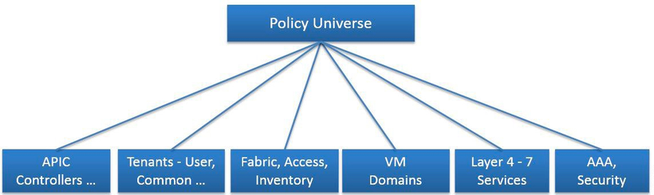
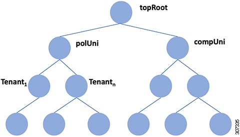
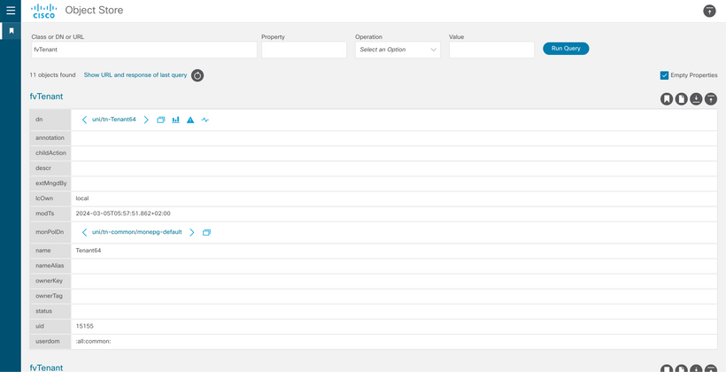
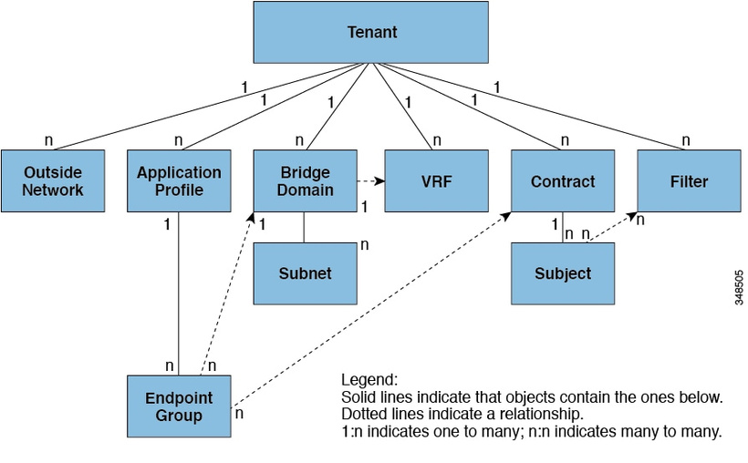
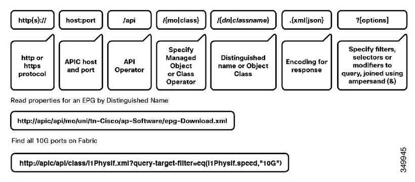

Cisco ACI object model explained¶

Before diving into the Cisco ACI APIs, we need a brief introduction to the hierarchical structure of its elements.
This article may look intimidating due to its complexity. In reality, it should be used as a reference whenever we need to better understand a detail in order to optimize our automation. Don’t be discouraged, automating a Cisco ACI fabric is actually a very straightforward process.
Promise Theory¶
Cisco ACI is object-oriented and based on Promise Theory: each object declares the promises it keeps, i.e., it specifies what can be done. Policies establish the relationships between the objects that provide promises and those that consume them:

Let’s take an example related to traffic management between EPGs:
- EPG (Endpoint Group): a group of endpoints promises to provide/accept traffic under specific conditions.
- Contracts: define the interaction rules between EPGs.
- Policy model: declares that two EPGs can communicate according to the rules defined in a given contract.
- At this point, the desired state composed of EPGs, Contracts, and Policy model is pushed down, and objects implement the changes, returning faults when required.
Object Model¶
Cisco ACI uses a hierarchical model, in which objects located in different branches can still directly interact.

The object model represents the tree of objects and their properties implementing the Cisco ACI fabric. Each Managed Object (MO) has a class and a unique Distinguished Name (DN), formed by its parent name and relative name. The Management Information Model (MIM) describes the structure of the model, the relationships, and the objects. In other words, the object model contains the fabric configuration, implemented according to MIM rules.
The object model is managed by an APIC (Application Policy Infrastructure Controller) cluster. Each switch receives the policies from the APIC and enforces them locally.
To see some examples, we can use Visore, available from the APIC at /visore.html or under Tools → Object Store Browser:

In the example above, I searched for the class fvTenant, and Visore returned all the objects belonging to that class.
Some attributes to highlight:
DN(Distinguished Name):*the unique identifier of the object (e.g.,uni/tn-Tenant64). uni (Unified Namespace) is the root of the MO tree. All fabric objects have a DN, rooted in uni.monPolDn(Monitoring Policy Distinguished Name): the policy applied to monitor the object (e.g.,uni/tn-common/monepg-default).name: the object’s name, which, as shown, is part of the DN (Tenant64). The reason why objects cannot be renamed in ACI is that the name is bound to the DN, and once set, the DN cannot be modified.
uni is the DN root, i.e., the topRoot object (described by MIM), from which all fabric objects derive. Some of the first levels under uni include:
| Branch | Meaning |
|---|---|
uni/tn-* |
Tenant (fvTenant class). Contains AppProfiles, EPGs, BDs, Subnets, Contracts, etc. |
uni/infra |
Physical infrastructure and policies: access policies, profiles, AAEP, switch profiles, physical/VM domains. |
uni/fabric |
Fabric configuration: global policies, fabric-wide settings, discovery. |
uni/topology |
Physical structure of pods and nodes (Leaf/Spine, interfaces, port-channels). |
uni/health |
Global health of the fabric (in addition to healthInst for each MO). |
uni/fv |
Package for logical virtualization objects (tenants, BDs, EPGs, etc.). |
uni/vz |
Contracts package (communication policies). |
uni/qos |
QoS policies. |
uni/mgmt |
Management objects (In-Band and Out-of-Band). |
uni/l3ext |
Configurations for external Layer 3 connections (Outside Networks, External EPGs). |
uni/phys |
Physical domains. |
uni/vmmp |
VMM domains (VMware, Hyper-V, KVM, OpenStack). |
uni/cloud |
Cloud domain (integration with public clouds). |
Object Relationships¶
Let’s now see how the objects inside uni relate to each other.
This example refers to the logical part. In Cisco ACI, the network 10.10.10.1/24 is represented as a Subnet object associated with a Bridge Domain. A Bridge Domain represents the L2 domain and can contain one or more subnets. The relationship here is one-to-many: one Bridge Domain is referenced by multiple Subnets.
Bridge Domains, in turn, are associated with a Tenant, which is essentially the logical container.

From the diagram we also see cross-relationships: an EPG represents a group of endpoints that share the same network and security policies. An EPG can communicate with other EPGs based on specific rules (Contracts).
The diagram shows that:
- one Bridge Domain is referenced by multiple EPGs (one-to-many),
- and one Contract is referenced by multiple EPGs (one-to-many).
From a data structure perspective:
- each object has an attributes dictionary containing all its specific values (DN, name, description, etc.),
- relationships to other objects are described in the children list.
When an object contains a group of objects (e.g., a Tenant contains its associated Bridge Domains), the parent object includes those objects in its children. Example: a Bridge Domain containing a Subnet:
{
"totalCount": "1",
"imdata": [
{
"fvBD": {
"attributes": {
"OptimizeWanBandwidth": "no",
"annotation": "",
"arpFlood": "yes",
"descr": "",
"dn": "uni/tn-NTS_TRAINING/BD-APP",
// [...]
},
"children": [
{
"fvSubnet": {
"attributes": {
"annotation": "",
"ctrl": "",
"descr": "",
"ip": "10.1.1.254/24",
// [...]
}
}
},
// [...]
]
}
}
]
}
When an object references another object located in a different branch, the children list does not contain the full object but only a reference. Example: an EPG referencing a Bridge Domain:
{
"totalCount": "1",
"imdata": [
{
"fvAEPg": {
"attributes": {
"annotation": "",
"descr": "",
"dn": "uni/tn-NTS_TRAINING/ap-CorpApp/epg-CLIENTS",
// [...]
},
"children": [
// [...]
{
"fvRsBd": {
"attributes": {
"annotation": "",
"tnFvBDName": "CLIENTS",
"userdom": "all"
}
}
}
]
}
}
]
}
Notice also that the class of the referenced Bridge Domain is not fvBd but fvRsBd, where Rs stands for relationship.
API URL Structure¶
Finally, let’s describe the URL structure:

Take for example the address used to retrieve the Bridge Domain shown earlier:
Breakdown:
https→ protocol used to access the APIC* 172.25.82.1→ APIC cluster address/api→ start of API-reserved paths (the web interface uses other components, often under/insieme)/mo→ querying a Managed Object (alternatively, we could list all objects of a given class)/uni/tn-NTS_TRAINING/BD-CLIENTS→ DN of the object (also the path from the root).json→ output format (JSON; XML is the alternative).
We could also use the following address:
In this case, /node specifies that the request must be directed to a specific node of the APIC cluster. The node is determined by the address. Otherwise, the request is handled by the cluster.